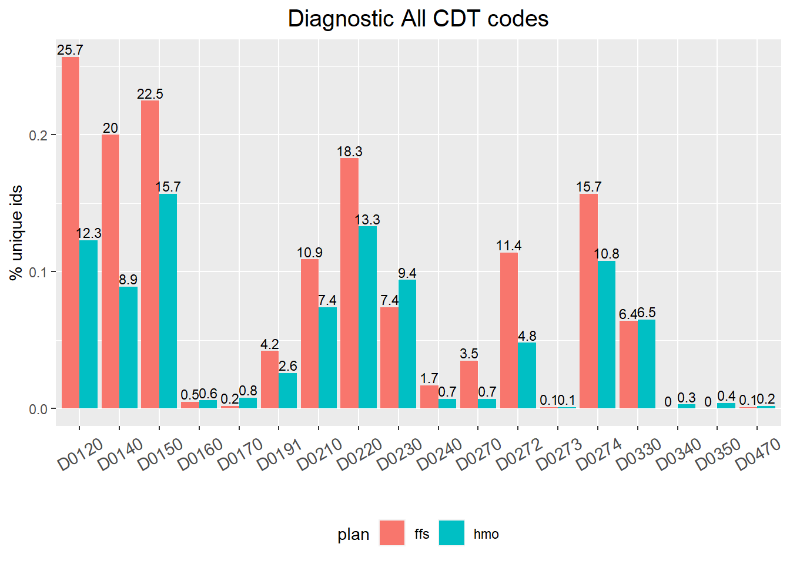

Last updated: 2024-11-01
Checks: 6 1
Knit directory: Oral-public-health/
This reproducible R Markdown analysis was created with workflowr (version 1.7.1). The Checks tab describes the reproducibility checks that were applied when the results were created. The Past versions tab lists the development history.
The R Markdown file has unstaged changes. To know which version of
the R Markdown file created these results, you’ll want to first commit
it to the Git repo. If you’re still working on the analysis, you can
ignore this warning. When you’re finished, you can run
wflow_publish to commit the R Markdown file and build the
HTML.
Great job! The global environment was empty. Objects defined in the global environment can affect the analysis in your R Markdown file in unknown ways. For reproduciblity it’s best to always run the code in an empty environment.
The command set.seed(20240422) was run prior to running
the code in the R Markdown file. Setting a seed ensures that any results
that rely on randomness, e.g. subsampling or permutations, are
reproducible.
Great job! Recording the operating system, R version, and package versions is critical for reproducibility.
Nice! There were no cached chunks for this analysis, so you can be confident that you successfully produced the results during this run.
Great job! Using relative paths to the files within your workflowr project makes it easier to run your code on other machines.
Great! You are using Git for version control. Tracking code development and connecting the code version to the results is critical for reproducibility.
The results in this page were generated with repository version 33a7865. See the Past versions tab to see a history of the changes made to the R Markdown and HTML files.
Note that you need to be careful to ensure that all relevant files for
the analysis have been committed to Git prior to generating the results
(you can use wflow_publish or
wflow_git_commit). workflowr only checks the R Markdown
file, but you know if there are other scripts or data files that it
depends on. Below is the status of the Git repository when the results
were generated:
Ignored files:
Ignored: .Rhistory
Ignored: analysis/ddwi_part1_cache/
Ignored: analysis/part1_cache/
Unstaged changes:
Modified: analysis/part3.Rmd
Note that any generated files, e.g. HTML, png, CSS, etc., are not included in this status report because it is ok for generated content to have uncommitted changes.
These are the previous versions of the repository in which changes were
made to the R Markdown (analysis/part3.Rmd) and HTML
(docs/part3.html) files. If you’ve configured a remote Git
repository (see ?wflow_git_remote), click on the hyperlinks
in the table below to view the files as they were in that past version.
| File | Version | Author | Date | Message |
|---|---|---|---|---|
| Rmd | 33a7865 | han | 2024-10-16 | 10/16/2024 |
| html | 33a7865 | han | 2024-10-16 | 10/16/2024 |
| Rmd | 43ec3bc | han | 2024-10-15 | 10/15/2024 |
| html | 43ec3bc | han | 2024-10-15 | 10/15/2024 |
| Rmd | 37f120f | han | 2024-10-09 | 10/9/2024 |
| html | 37f120f | han | 2024-10-09 | 10/9/2024 |
#data_2019$demographics_2019 %>% filter(demographic_2019_check=="Yes") %>% nrow() # 1612620
#length(unique(data_year2019$hmo_claims_2019$RECIPIENT_ID)) # 56763
#length(unique(data_year2019$ffs_claims_2019$RECIPIENT_ID)) # 59361
ggplot(data.frame(source=c( "Demographs", "HMO claims", "FFS claims"), num=c(1612620, 56763, 59361)), aes(x=source, y=num, fill=source))+
geom_bar(position = "dodge",stat="identity")+
xlab("")+ylab("No. unique ids")+
# ylim(c(0,1))+
theme(axis.text.x = element_text(angle =0, vjust = 0.5, size=10))+
ggtitle("year 2019")+
geom_text(aes(label=num), position=position_dodge(width=0.9), vjust=-0.25)+ # add numbers over bars
#geom_signif(annotations ="p=0.074", y_position = 0.52 ,xmin=1, xmax=2, size=1, vjust=-0.5, textsize=3.5, color="black")+ # textsize is for text over the bar; size is for width of lines
# geom_signif(annotations ="p<0.001", y_position = 0.59 ,xmin=1, xmax=3, size=1, vjust=-0.5, textsize=3.5, color="red")+
#geom_signif(annotations ="p<0.001", y_position = 0.86 ,xmin=1, xmax=4, size=1, vjust=-0.5, textsize=3.5, color="red")+
theme(plot.title = element_text(hjust = 0.5, size=15))+ #center the title
theme(legend.title=element_blank())+
theme(legend.position = "none")
| Version | Author | Date |
|---|---|---|
| 37f120f | han | 2024-10-09 |
details about how these numbers are calculated are here
FFS: 59361/1612620 [1] 0.03681028; HMO:
56763/1612620 [1] 0.03519924
total number from Demographs.
FFS_count=c(393420, 385650, 388230, 389031, 384248, 384563, 387879, 387891, 387930, 390666, 387225, 389706)
HMO_count=c(803755, 813129, 811751, 812222, 818355, 818552, 815305, 817917, 818435, 814588, 816982, 814091)
ggplot(data.frame(source=c( "FFS_enrolled", "HMO_enrolled", "HMO claims", "FFS claims"), num=c(sum(FFS_count), sum(HMO_count), 56763, 59361)), aes(x=source, y=num, fill=source))+
geom_bar(position = "dodge",stat="identity")+
xlab("")+ylab("No. unique ids")+
# ylim(c(0,1))+
theme(axis.text.x = element_text(angle =0, vjust = 0.5, size=10))+
ggtitle("year 2019")+
geom_text(aes(label=num), position=position_dodge(width=0.9), vjust=-0.25)+ # add numbers over bars
#geom_signif(annotations ="p=0.074", y_position = 0.52 ,xmin=1, xmax=2, size=1, vjust=-0.5, textsize=3.5, color="black")+ # textsize is for text over the bar; size is for width of lines
# geom_signif(annotations ="p<0.001", y_position = 0.59 ,xmin=1, xmax=3, size=1, vjust=-0.5, textsize=3.5, color="red")+
#geom_signif(annotations ="p<0.001", y_position = 0.86 ,xmin=1, xmax=4, size=1, vjust=-0.5, textsize=3.5, color="red")+
theme(plot.title = element_text(hjust = 0.5, size=15))+ #center the title
theme(legend.title=element_blank())+
theme(legend.position = "none")
| Version | Author | Date |
|---|---|---|
| 43ec3bc | han | 2024-10-15 |
data_year2019=readRDS("C:\\Shengtong\\Research\\OralPublicHealth\\Dental_Emergency_visit\\CWFluoridationAnalysis\\data_year2019.rds")
#colnames(data_year2019$hmo_claims_2019)
#unique(data_year2019$hmo_claims_2019$PROCEDURE_CODE)hmo_code=unique(data_year2019$hmo_claims_2019$PROCEDURE_CODE)
ffs_code=unique(data_year2019$ffs_claims_2019$PROCEDURE_CODE)
hmo_ffs_code=intersect(hmo_code, ffs_code)
num_id_hmo=length(unique(data_year2019$hmo_claims_2019$RECIPIENT_ID))
num_id_ffs=length(unique(data_year2019$ffs_claims_2019$RECIPIENT_ID))
calculate_prop=function(code)
{
hmo_prop=length(unique(data_year2019$hmo_claims_2019 %>% filter(PROCEDURE_CODE==code) %>% select(RECIPIENT_ID) %>% pull))/num_id_hmo
ffs_prop=length(unique(data_year2019$ffs_claims_2019 %>% filter(PROCEDURE_CODE==code) %>% select(RECIPIENT_ID) %>% pull))/num_id_ffs
return(list(hmo_prop, ffs_prop))
}diagnostic_code=hmo_ffs_code[substr(hmo_ffs_code, start = 1, stop = 2)=="D0"]
y=sapply(diagnostic_code,calculate_prop)
ggplot(data.frame(prop=round(unlist(y),3), code=rep(diagnostic_code, each=2), plan=rep(c("hmo", "ffs"), length(diagnostic_code))), aes(x=code, y=prop,fill=plan)) +geom_bar(position = "dodge", stat="identity")+
# ylim(c(0, 0.7))+
ylab("% unique ids")+
#xlab("number of visits in the year")+
theme(legend.position="bottom")+
theme(axis.text.x = element_text(angle = 30, vjust = 0.5, size=11))+
geom_text(aes(label=prop*100), position=position_dodge(width=0.9), vjust=-0.25, size=3)+ # add numbers over bars
ggtitle("Diagnostic All CDT codes")+
theme(plot.title = element_text(hjust = 0.5, size=15)) #center the title
data.frame(prop=round(unlist(y),3), code=rep(diagnostic_code, each=2), plan=rep(c("hmo", "ffs"), length(diagnostic_code)))%>%
datatable(extensions = 'Buttons',
options = list(dom = 'Blfrtip',
buttons = c('copy', 'csv', 'excel', 'pdf', 'print'),
lengthMenu = list(c(10,25,50,-1),
c(10,25,50,"All"))))
sessionInfo()R version 4.3.2 (2023-10-31 ucrt)
Platform: x86_64-w64-mingw32/x64 (64-bit)
Running under: Windows 10 x64 (build 19045)
Matrix products: default
locale:
[1] LC_COLLATE=English_United States.utf8
[2] LC_CTYPE=English_United States.utf8
[3] LC_MONETARY=English_United States.utf8
[4] LC_NUMERIC=C
[5] LC_TIME=English_United States.utf8
time zone: America/Chicago
tzcode source: internal
attached base packages:
[1] grid stats graphics grDevices utils datasets methods
[8] base
other attached packages:
[1] VennDiagram_1.7.3 futile.logger_1.4.3 condsurv_1.0.0
[4] devtools_2.4.5 usethis_2.2.2 tidycmprsk_1.0.0
[7] gtsummary_1.7.2 ggsurvfit_1.0.0 irr_0.84.1
[10] lpSolve_5.6.20 readxl_1.4.3 cowplot_1.1.2
[13] matrixStats_1.2.0 gridExtra_2.3 DT_0.31
[16] rstatix_0.7.2 ggpubr_0.6.0 kableExtra_1.3.4
[19] lubridate_1.9.3 forcats_1.0.0 stringr_1.5.1
[22] dplyr_1.1.4 purrr_1.0.2 readr_2.1.4
[25] tidyr_1.3.0 tibble_3.2.1 ggplot2_3.4.4
[28] tidyverse_2.0.0
loaded via a namespace (and not attached):
[1] formatR_1.14 remotes_2.4.2.1 rlang_1.1.2
[4] magrittr_2.0.3 git2r_0.33.0 compiler_4.3.2
[7] systemfonts_1.0.5 vctrs_0.6.5 rvest_1.0.3
[10] profvis_0.3.8 pkgconfig_2.0.3 fastmap_1.1.1
[13] backports_1.4.1 ellipsis_0.3.2 labeling_0.4.3
[16] utf8_1.2.4 promises_1.2.1 rmarkdown_2.25
[19] sessioninfo_1.2.2 tzdb_0.4.0 xfun_0.41
[22] cachem_1.0.8 jsonlite_1.8.8 highr_0.10
[25] later_1.3.2 broom_1.0.5 R6_2.5.1
[28] bslib_0.6.1 stringi_1.8.3 car_3.1-2
[31] pkgload_1.3.3 jquerylib_0.1.4 cellranger_1.1.0
[34] Rcpp_1.0.11 knitr_1.45 httpuv_1.6.13
[37] Matrix_1.6-1.1 splines_4.3.2 timechange_0.2.0
[40] tidyselect_1.2.0 rstudioapi_0.15.0 abind_1.4-5
[43] yaml_2.3.8 miniUI_0.1.1.1 pkgbuild_1.4.3
[46] lattice_0.21-9 shiny_1.8.0 withr_2.5.2
[49] evaluate_0.23 lambda.r_1.2.4 survival_3.5-7
[52] urlchecker_1.0.1 xml2_1.3.6 pillar_1.9.0
[55] carData_3.0-5 whisker_0.4.1 generics_0.1.3
[58] rprojroot_2.0.4 hms_1.1.3 munsell_0.5.0
[61] scales_1.3.0 xtable_1.8-4 glue_1.6.2
[64] tools_4.3.2 webshot_0.5.5 ggsignif_0.6.4
[67] fs_1.6.3 crosstalk_1.2.1 colorspace_2.1-0
[70] cli_3.6.2 workflowr_1.7.1 futile.options_1.0.1
[73] fansi_1.0.6 broom.helpers_1.14.0 viridisLite_0.4.2
[76] svglite_2.1.3 gt_0.10.0 gtable_0.3.4
[79] sass_0.4.8 digest_0.6.33 farver_2.1.1
[82] htmlwidgets_1.6.4 memoise_2.0.1 htmltools_0.5.7
[85] lifecycle_1.0.4 httr_1.4.7 mime_0.12